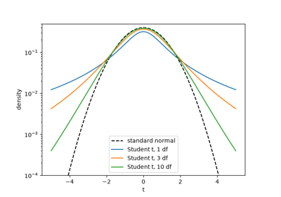
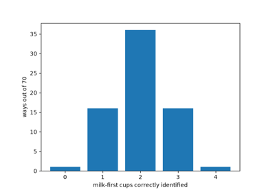
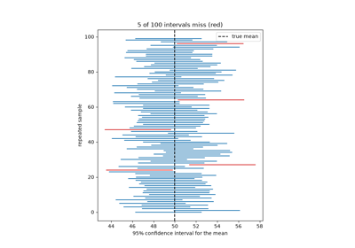
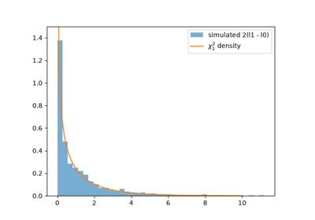
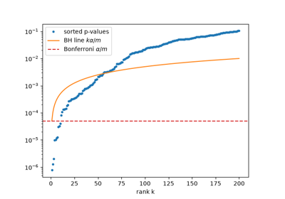

Breakthroughs in Statistical Inference#
“To consult the statistician after an experiment is finished is often merely to ask him to conduct a post mortem examination. He can perhaps say what the experiment died of.” – Ronald Fisher, Presidential Address to the First Indian Statistical Congress, 1938
Probability theory asks, “Given a known distribution, what data should
we expect?” Statistical inference asks the reverse: “Given the data
actually observed, what can we say about the unknown distribution it
came from?” This chronology traces the ideas behind
mathematicskit.statistics, from Carl Friedrich Gauss’s theory of
errors to the computer-age bootstrap, which avoids the need for a
closed-form sampling distribution altogether, and to the false
discovery rate, which makes it possible to run thousands of tests at
once.
1805-1809 – Ordinary Least-Squares Regression#
The least-squares fitting procedure of Adrien-Marie Legendre and Carl Friedrich Gauss (see the numerical-analysis chronology) extends to statistical inference about the fitted coefficients once the residuals are modeled as random noise. Each coefficient gets a standard error, a t-statistic, and a p-value against the null hypothesis that it is exactly zero, and the \(R^2\) statistic measures how much of the response’s variance the model explains. This statistical apparatus grew up around the early-19th-century fitting principle over the following hundred years, as the theory of linear models matured.
Implementation: mathematicskit.statistics.systems.regression.linear_regression()
builds this apparatus around a numpy.linalg.lstsq() fit, with
coefficient significance referred to scipy.stats.t.
References: A.-M. Legendre, Nouvelles méthodes pour la détermination des orbites des comètes (Paris: Courcier, 1805), Appendix; C. F. Gauss, Theoria Motus Corporum Coelestium (Hamburg: Perthes et Besser, 1809).
1809 – Gauss and the Theory of Errors#
Besides its role in the least-squares story (see the numerical-analysis chronology), Carl Friedrich Gauss’s Theoria Motus derived the normal distribution as the error law that follows from requiring the arithmetic mean to be the most probable estimate of a repeatedly measured quantity. It laid the foundation for treating measurement error as a random variable with a definite, analyzable distribution, the starting point of nearly all classical statistical inference.
Implementation: mathematicskit.statistics.systems.confidence_intervals.mean_confidence_interval()
and every hypothesis test in this domain build on this normal error
model, or on Student’s t for small samples.
References: C. F. Gauss, Theoria Motus Corporum Coelestium (Hamburg: Perthes et Besser, 1809), Book II, Section 3.
1888-1896 – Galton, Pearson, and the Correlation Coefficient#
Francis Galton, studying the heights of parents and their grown children, noticed that tall parents tend to have tall children, but children who are on average less extreme than their parents. He called this “regression toward mediocrity,” and in 1888 introduced “co-relation” as a single number measuring how closely two variables move together. Karl Pearson put the idea on a rigorous footing in 1896 with the product-moment formula still used today:
The coefficient lies between \(-1\) and \(1\), reaching the extremes only when the points fall exactly on a straight line. After both variables are standardized, it is also the slope of the regression line, which is exactly Galton’s regression toward the mean.
Implementation: mathematicskit.statistics.systems.correlation.pearson_correlation()
wraps scipy.stats.pearsonr(). The tests check the coefficient
against the defining formula and its p-value against the t-statistic
\(r\sqrt{(n-2)/(1-r^2)}\) with \(n-2\) degrees of freedom.
References: F. Galton, “Co-relations and their Measurement, Chiefly from Anthropometric Data,” Proceedings of the Royal Society of London 45 (1888), 135-145; K. Pearson, “Mathematical Contributions to the Theory of Evolution. III. Regression, Heredity, and Panmixia,” Philosophical Transactions of the Royal Society A 187 (1896), 253-318.

1900 – Pearson’s Chi-Square Test#
Karl Pearson’s 1900 paper introduced a general-purpose test of whether observed category counts are consistent with a hypothesized distribution. Sum the squared, normalized differences between observed and expected counts, and compare the total against the chi-square distribution. It was one of the first tests to give an explicit, distribution-based measure of statistical significance, and it is still the standard tool for categorical goodness-of-fit and independence testing.
Implementation: mathematicskit.statistics.systems.hypothesis_tests.chi_square_goodness_of_fit()
and chi_square_independence()
compute this statistic, referred to scipy.stats.chi2, and the
test suite cross-checks them against
scipy.stats.chisquare()/chi2_contingency().
References: K. Pearson, “On the Criterion that a Given System of Deviations from the Probable in the Case of a Correlated System of Variables is Such that it Can be Reasonably Supposed to have Arisen from Random Sampling,” Philosophical Magazine Series 5, 50(302) (1900), 157-175.

1904 – Spearman’s Rank Correlation#
The psychologist Charles Spearman wanted to measure association between quantities, like ability rankings, that are only meaningful as an order. His answer was to replace each observation by its rank and compute the correlation of the ranks. With no ties this reduces to
where \(d_i\) is the difference between observation \(i\)’s two ranks. Because only the order matters, \(\rho = 1\) for any increasing relationship, however curved, and one wild outlier can shift it by only a limited amount. It was one of the first rank-based statistics, an idea taken up again in the nonparametric tests of the 1940s.
Implementation: mathematicskit.statistics.systems.correlation.spearman_correlation()
wraps scipy.stats.spearmanr(). The tests verify the rank-difference
formula above and that any monotone transformation gives
\(\rho = 1\).
References: C. Spearman, “The Proof and Measurement of Association between Two Things,” American Journal of Psychology 15(1) (1904), 72-101.
1908 – Gosset’s t-Distribution#
William Sealy Gosset, a chemist at the Guinness brewery in Dublin, needed reliable conclusions from the small samples his brewing experiments produced, where the usual large-sample normal approximation did not hold. Guinness did not let employees publish under their own names, to protect trade secrets, so Gosset wrote as “Student.” His 1908 paper derived the exact sampling distribution of a mean estimated from a small sample with unknown variance. The distribution has heavier tails than the normal and approaches it only as the sample size grows.
Implementation: mathematicskit.statistics.systems.hypothesis_tests.one_sample_t_test()
and two_sample_t_test()
implement this test, referred to scipy.stats.t, and are
cross-checked against
scipy.stats.ttest_1samp()/ttest_ind().
References: Student [W. S. Gosset], “The Probable Error of a Mean,” Biometrika 6(1) (1908), 1-25.

Student’s t-distribution and the small-sample t-test
1922 – Fisher’s Maximum Likelihood#
In “On the Mathematical Foundations of Theoretical Statistics,” Ronald Fisher set out a general recipe for estimating a model’s parameters: choose the values that make the observed data most probable. For independent observations with density \(f(x;\theta)\), that means maximizing the log-likelihood
Fisher also introduced the vocabulary of consistency, efficiency, and sufficiency to judge estimators, and argued that maximum likelihood does as well as possible in large samples. For a normal sample, the maximizers are the sample mean and the variance with divisor \(n\) (not \(n-1\)): maximum likelihood is efficient, but not always unbiased.
Implementation: mathematicskit.statistics.systems.likelihood.maximum_likelihood_fit()
wraps the fit method of any scipy.stats continuous
distribution and returns a
MaximumLikelihoodResult.
The tests check the closed-form normal and exponential estimates and
the normal log-likelihood.
References: R. A. Fisher, “On the Mathematical Foundations of Theoretical Statistics,” Philosophical Transactions of the Royal Society A 222 (1922), 309-368.
1925 – Fisher and the Analysis of Variance#
Ronald Fisher’s 1925 book Statistical Methods for Research Workers distilled his work at the Rothamsted agricultural experiment station. It introduced the analysis of variance (ANOVA) to a wide audience: split a dataset’s total variability into a between-groups component and a within-groups component, and compare their ratio with the distribution expected if every group shares a common mean. George Snedecor later named that ratio the F-statistic, after Fisher. ANOVA tests many treatment groups for equal means in one coherent test, instead of a cascade of pairwise t-tests whose errors compound.
Implementation: mathematicskit.statistics.systems.hypothesis_tests.one_way_anova()
implements this decomposition, referred to scipy.stats.f, and
is cross-checked against scipy.stats.f_oneway().
References: R. A. Fisher, Statistical Methods for Research Workers (Edinburgh: Oliver and Boyd, 1925), Ch. 7.
1933-1939 – Kolmogorov, Smirnov, and Distribution-Free Goodness of Fit#
Pearson’s chi-square test needs the data grouped into bins, and the answer depends on the choice of bins. Andrey Kolmogorov proposed comparing the whole empirical distribution function \(F_n\) with the hypothesized CDF \(F\), through the largest vertical gap
He proved that \(\sqrt n D_n\) has the same limiting distribution for every continuous \(F\), so one table of critical values serves all continuous models. Nikolai Smirnov extended the idea in 1939 to testing whether two samples come from the same distribution.
Implementation: mathematicskit.statistics.systems.nonparametric.kolmogorov_smirnov_test()
wraps scipy.stats.kstest() and scipy.stats.ks_2samp(). The
tests compute \(D_n\) directly from the sorted sample.
References: A. N. Kolmogorov, “Sulla determinazione empirica di una legge di distribuzione,” Giornale dell’Istituto Italiano degli Attuari 4 (1933), 83-91; N. V. Smirnov, “On the Estimation of the Discrepancy between Empirical Curves of Distribution for Two Independent Samples,” Bulletin Mathématique de l’Université de Moscou 2(2) (1939), 3-14.
1935 – Fisher’s Exact Test and the Lady Tasting Tea#
The Design of Experiments opens with a thought experiment. A lady claims she can taste whether the milk or the tea was poured into the cup first. She is given eight cups in random order, four of each kind, and asked to pick out the four milk-first cups. If she is only guessing, each of the \(\binom84 = 70\) possible choices is equally likely, so she picks all four correctly with probability exactly \(1/70\). Conditioning on the table’s margins in this way turns any 2x2 table into a hypergeometric probability calculation. The result is an exact p-value that stays valid for counts too small for the chi-square approximation. The same example made randomization the foundation of experimental design.
Implementation: mathematicskit.statistics.systems.nonparametric.fisher_exact_test()
wraps scipy.stats.fisher_exact(). The tests reproduce the
\(1/70\) and \(17/70\) p-values of the tea-tasting experiment.
References: R. A. Fisher, The Design of Experiments (Edinburgh: Oliver and Boyd, 1935), Ch. 2.

Fisher’s exact test and the lady tasting tea
1937 – Neyman’s Confidence Intervals#
Jerzy Neyman’s 1937 paper gave the confidence interval its now-standard frequentist meaning, and distinguished it from Ronald Fisher’s superficially similar fiducial intervals. A confidence interval comes from a procedure that, over repeated sampling, produces intervals containing the true parameter value a specified proportion of the time, such as 95%. It is a statement about the procedure’s long-run reliability, not a probability statement about any one interval.
Implementation: mathematicskit.statistics.systems.confidence_intervals.mean_confidence_interval(),
proportion_confidence_interval(),
and variance_confidence_interval()
implement this procedure for their respective parameters. This
domain’s tests verify the long-run coverage rate directly by repeated
simulation.
References: J. Neyman, “Outline of a Theory of Statistical Estimation Based on the Classical Theory of Probability,” Philosophical Transactions of the Royal Society A 236(767) (1937), 333-380.

Confirming a 95% confidence interval’s coverage by simulation
1938 – Wilks’s Theorem and the Likelihood-Ratio Test#
Jerzy Neyman and Egon Pearson had shown in 1933 that the most powerful test between two simple hypotheses rejects when the likelihood ratio is large. Samuel Wilks supplied the tool that made the likelihood ratio usable for composite hypotheses. If a restricted model is nested inside a larger one with \(k\) more free parameters, then under the restricted model
whatever the model. Any two nested models fitted by maximum likelihood can therefore be compared with the same chi-square table, and many classical tests turn out to be special cases.
Implementation: mathematicskit.statistics.systems.likelihood.likelihood_ratio_test()
refers \(\Lambda\) to scipy.stats.chi2. The tests check it
against the closed form \(n\log(\hat\sigma_0^2/\hat\sigma_1^2)\)
for testing a normal mean.
References: S. S. Wilks, “The Large-Sample Distribution of the Likelihood Ratio for Testing Composite Hypotheses,” Annals of Mathematical Statistics 9(1) (1938), 60-62; J. Neyman and E. S. Pearson, “On the Problem of the Most Efficient Tests of Statistical Hypotheses,” Philosophical Transactions of the Royal Society A 231 (1933), 289-337.

Wilks’s theorem and the likelihood-ratio test
1945-1947 – Wilcoxon, Mann, Whitney, and Rank Tests#
Frank Wilcoxon, a chemist at American Cyanamid, wanted a quick test that would not be thrown off by the occasional wild measurement. In a four-page 1945 paper, he replaced the observations by their ranks. To compare paired measurements, rank the absolute differences and add up the ranks of the positive ones. To compare two independent samples, add up the ranks of one sample within the combined data. Under the null hypothesis every assignment of ranks is equally likely, so the null distribution can be counted exactly and does not depend on the shape of the data’s distribution. Henry Mann and Donald Whitney recast the two-sample version in 1947 as the statistic \(U\), the number of pairs in which the first sample’s value is larger, and tabulated it.
Implementation: mathematicskit.statistics.systems.nonparametric.wilcoxon_signed_rank_test()
and mann_whitney_u_test()
wrap scipy.stats.wilcoxon() and scipy.stats.mannwhitneyu().
The tests check exact small-sample p-values such as \(1/32\) for
five positive differences.
References: F. Wilcoxon, “Individual Comparisons by Ranking Methods,” Biometrics Bulletin 1(6) (1945), 80-83; H. B. Mann and D. R. Whitney, “On a Test of Whether One of Two Random Variables is Stochastically Larger than the Other,” Annals of Mathematical Statistics 18(1) (1947), 50-60.
1949-1958 – Quenouille, Tukey, and the Jackknife#
Maurice Quenouille proposed reducing an estimator’s bias by recomputing it with each observation left out in turn. If \(\hat\theta_{(i)}\) is the estimate without observation \(i\) and \(\hat\theta_{(\cdot)}\) their average, the bias estimate is \((n-1)(\hat\theta_{(\cdot)} - \hat\theta)\). John Tukey saw in 1958 that the same leave-one-out replicates also give a standard error,
and named the method the “jackknife,” a rough-and-ready tool for many jobs. It was the first general-purpose resampling method. Its failures on non-smooth statistics such as the median led directly to Efron’s bootstrap.
Implementation: mathematicskit.statistics.systems.jackknife.jackknife()
is written by hand (SciPy has no general jackknife) and returns a
JackknifeResult. The tests
check two exact identities: the jackknife standard error of the mean is
\(s/\sqrt n\), and bias-correcting the divide-by-\(n\) variance
gives the unbiased divide-by-\((n-1)\) variance.
References: M. H. Quenouille, “Approximate Tests of Correlation in Time-Series,” Journal of the Royal Statistical Society B 11(1) (1949), 68-84; M. H. Quenouille, “Notes on Bias in Estimation,” Biometrika 43(3/4) (1956), 353-360; J. W. Tukey, “Bias and Confidence in Not-quite Large Samples” (abstract), Annals of Mathematical Statistics 29(2) (1958), 614.
1956-1961 – Stein’s Paradox and the James-Stein Estimator#
Suppose each of \(p\) unrelated quantities is measured once with normal noise, \(x_i \sim N(\theta_i, \sigma^2)\). The obvious estimate of each \(\theta_i\) is \(x_i\) itself. Charles Stein proved in 1956 that when \(p \ge 3\) this is inadmissible: another estimator has lower expected total squared error for every possible \(\theta\). In 1961 Willard James and Stein gave an explicit one,
which shrinks every observation toward a common point. The quantities need not be related at all. The result shocked statisticians, and it underlies the empirical Bayes methods, ridge regression, and regularization of later decades.
Implementation: mathematicskit.statistics.systems.shrinkage.james_stein_estimator()
implements the (optionally positive-part) estimator directly. The tests
check the shrinkage factor and, by seeded simulation, the lower total
squared error.
References: C. Stein, “Inadmissibility of the Usual Estimator for the Mean of a Multivariate Normal Distribution,” Proceedings of the Third Berkeley Symposium on Mathematical Statistics and Probability, vol. 1 (1956), 197-206; W. James and C. Stein, “Estimation with Quadratic Loss,” Proceedings of the Fourth Berkeley Symposium on Mathematical Statistics and Probability, vol. 1 (1961), 361-379.
1979 – Efron’s Bootstrap#
Bradley Efron’s 1979 paper proposed a strikingly simple, purely computational alternative to deriving a statistic’s sampling distribution analytically. Resample the observed data with replacement thousands of times, recompute the statistic on each resample, and use the resulting empirical distribution directly to build confidence intervals or standard errors. No closed-form sampling distribution is needed. The price is thousands of recomputations, which by 1979 computers could routinely afford.
Implementation: mathematicskit.statistics.systems.bootstrap.bootstrap_confidence_interval()
wraps scipy.stats.bootstrap(), which implements the percentile,
“basic”, and bias-corrected and accelerated (BCa) interval methods
developed from Efron’s original proposal.
References: B. Efron, “Bootstrap Methods: Another Look at the Jackknife,” The Annals of Statistics 7(1) (1979), 1-26.

1995 – Benjamini, Hochberg, and the False Discovery Rate#
When a thousand hypotheses are tested at the 5% level, about fifty true nulls are rejected by chance alone. The classical Bonferroni fix tests each hypothesis at \(\alpha/m\), which controls the chance of even one false rejection but misses most real effects. Yoav Benjamini and Yosef Hochberg proposed controlling a different quantity, the expected fraction of rejections that are false (the false discovery rate). Their step-up procedure sorts the p-values \(p_{(1)} \le \dots \le p_{(m)}\), finds the largest \(k\) with
and rejects the \(k\) smallest. For independent tests the false discovery rate is then at most \(\alpha\). The procedure made large-scale testing workable in genomics, neuroimaging, and other fields that run thousands of tests at once.
Implementation: mathematicskit.statistics.systems.multiple_testing.benjamini_hochberg()
and bonferroni_correction()
return adjusted p-values and rejection decisions in a
MultipleTestingResult.
The tests work a textbook example by hand and cross-check against
scipy.stats.false_discovery_control() where available.
References: Y. Benjamini and Y. Hochberg, “Controlling the False Discovery Rate: A Practical and Powerful Approach to Multiple Testing,” Journal of the Royal Statistical Society B 57(1) (1995), 289-300.

Benjamini-Hochberg and the false discovery rate